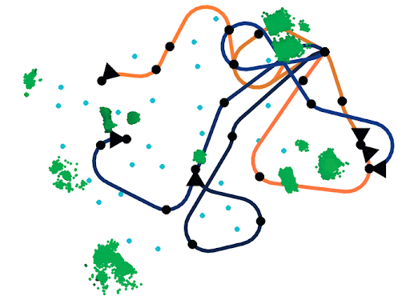

|
Javier Yu I recently completed a Ph.D. in Aeronautics and Astronautics at Stanford University. I was advised by Professor Mac Schwager as part of the Multi-robot Sytems Lab and was funded on a NSF Graduate Research Fellowship. As a roboticist I'm interested in practical solutions for problems at the intersection of learning and perception. My recent work is focused on how learned scene reconstructions can be used to safely and effectively improve robot performance. LinkedIn / Google Scholar / Github / Resume Email: |

|
Research |
|
|
HAMMER: Heterogeneous, Multi-Robot Semantic Gaussian
Splatting
Javier Yu, Timothy Chen, Mac Schwager RA-L, 2025 (submitted) project page / arXiv HAMMER is a collaborative 3D Gaussian Splatting framework that enables teams of heterogeneous robots to construct a shared metric-semantic map in real-time. Our maps allow the collaborating robots to develop a comprehensive spatial representation with coverage from the full robot team. HAMMER is designed with flexibility in mind to enable integration with a wide range of robots and sensing devices. |
|
|
SOUS VIDE: Cooking Visual Drone Navigation Policies in
a Gaussian Splatting Vacuum
JunEn Low, Maximilian Adang, Javier Yu, Keiko Nagami, Mac Schwager RA-L, 2025 (submitted) project page / arXiv SOUS VIDE is a novel simulator, training approach, and policy architecture for end-to-end visual drone navigation. Our trained policies exhibit zero-shot sim-to-real transfer with robust real-world performance using only on-board perception and computation. |
|
|
SAFER-Splat: Safety with Control Barrier Functions in
Online Gaussian Splatting Maps
Timothy Chen*, Aiden Swann*, Javier Yu*, Ola Shorinwa, Riku Murai, Monroe Kennedy III, Mac Schwager ICRA, 2025 project page / paper / code SAFER-Splat (Simultaneous Action Filtering and Environment Reconstruction) is a real-time, scalable, and minimally invasive action filter, based on control barrier functions, for safe robotic navigation and teleoperation in a detailed map constructed at runtime using Gaussian Splatting. |
|
|
Splat-Nav: Safe Real-Time Robot Navigation in Gaussian
Splatting Maps
Timothy Chen, Ola Shorinwa, Joseph Bruno, Javier Yu, Weijia Zeng, Keiko Nagami, Phillip Dames, Mac Schwager TRO, 2024 project page / paper Splat-Nav is a fast and safe robot navigation and localization pipeline designed to generate motion plans through Gaussian Splatting maps with rigorous collision constraints. |
|
|
NerfBridge: Bringing Real-time, Online Neural Radiance
Field Training to Robotics
Javier Yu, JunEn Low, Keiko Nagami, Mac Schwager ICRA Unconventional Spatial Representations Workshop, 2023 code / paper / video Nerf Bridge is an open-source and flexible software package that bridges between the ROS and the popular Nerfstudio library that enables real-time, online training of radiance fields (both NeRF and GS) using robot sensing data. |
|
|
DiNNO: Distributed Neural Network Optimization for
Multi-robot Collaborative Learning
Javier Yu, Joseph A. Vincent, Mac Schwager RA-L (with ICRA), 2022 code / arXiv DiNNO is a distributed optimization algorithm that allows teams of robots to cooperatively optimize neural network models using fully decentralized communication and computation. With DiNNO robots do not share data with each other, but instead share model updates, allowing for privacy-preserving and efficient multi-robot learning. |
|
|
Distributed Optimization Methods for Multi-robot
Systems: Tutorial and Survey
Ola Shorinwa*, Trevor Halsted*, Javier Yu*, Mac Schwager RAM, 2022 arXiv combined (old version) / tutorial / survey Distributed optimization is provides an generalizable algorithmic framework for deriving distributed algorithms for multi-robot applications. In this two part journal series, we provide a tutorial for casting multi-robot problems as distributed optimization problems, and survey the state of the art in distributed optimization algorithms. |
|
|
Distributed Multi-target Tracking for Autonomous
Vehicle Fleets
Ola Shorinwa*, Trevor Halsted*, Javier Yu*, Alex Koufos, Mac Schwager ICRA, 2020 project page paper / video ICRA 2020 Best Multi-Robot Systems Paper Award We present a distributed multi-target tracking algorithm that enables autonomous vehicle fleets to efficiently and collaboratively track hundreds of target vehicles. |
|

|
Real-time Distributed Non-myopic Task Selection for
Heterogeneous Robotic Teams
Andrew J. Smith, Graeme Best, Javier Yu, Geoffrey A. Hollinger Autonomous Robots, 2018 paper A novel algorithm for online, distributed, non-myopic task selection for heterogeneous robot teams. |
|
This website is adapted from Jon Barron's personal website. |